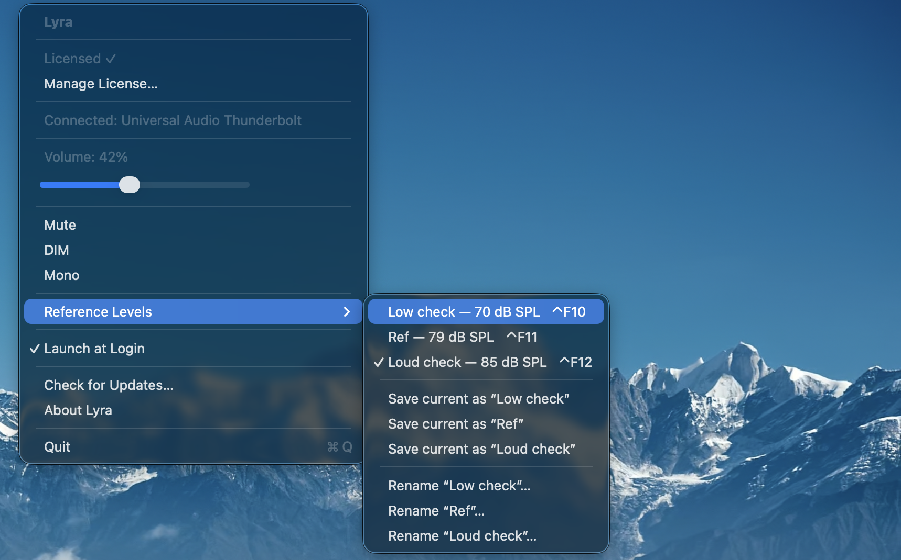

The most consequential decision in every studio session is not on any console or DAW. It's in the air between the monitors and the engineer's ears, and it gets remade forty times a day without anyone noticing — every time the monitor knob nudges up because the playback feels quiet, every time it gets pulled back because a client walked in, every time a session ends somewhere different from where it started.
Engineers who have never measured their actual monitoring SPL have one thing in common. They're surprised when they finally do.
That gap between intention and reality is where a real amount of bad mixing happens. The chorus that felt enormous at 6pm sounds thin in the morning. The bass that needs another decibel keeps needing one, until the whole low end is mud at any volume below what was set six sessions ago. The mix that translated fine at the studio falls apart in the car. None of these problems are mysterious. They all come from the same place: the engineer making decisions against a moving reference.
Calibrated monitoring is the practice of stopping the reference from moving. It is, by some distance, the most cost-effective upgrade most studios never make.
What calibration actually is
Calibration of a monitor chain means setting the controller so that a known reference signal at a known electrical level produces a known acoustic level at the listening position. Two pieces:
- A reference signal — usually pink noise, because it has equal energy per octave and exposes spectral imbalances cleanly.
- A target SPL at the listening position — measured in dB SPL, with a specified weighting (A or C) and time integration (slow or fast).
That's the whole spec. Once it's done, the monitor knob has a known position that corresponds to a known acoustic environment. Returning to that position any time gives you the same room you mixed in last time. Departing from it deliberately — for a loud check, a quiet check — gives you a known offset rather than a guess.
What you actually get
The benefits of working at a calibrated reference are practical, not theoretical. Five of them are worth naming explicitly.
Mixes translate better
This is the headline finding everyone talks about, and it has a real mechanical reason. The equal-loudness contours of the human ear (originally measured by Fletcher and Munson in the 1930s, codified by ISO 226) are reasonably flat in the 75 to 85 dB SPL range. Below that, perceived bass and treble both fall off. Above it, perceived spectral balance distorts upward. Mixing inside the flat zone of those curves means the relative levels you set are the relative levels other people will hear when they play your work back, even on much smaller systems.
Sessions stay consistent over time
The drift problem — where the monitor knob creeps up half a decibel here and a decibel there over the course of a day — vanishes when there's a calibrated position to return to. The mix you started in the morning gets compared to the mix you're making in the afternoon at the same level, instead of at "wherever the knob ended up after lunch". The same logic applies across days, across weeks, across rooms.
Hearing dose becomes predictable
A calibrated reference around 79 to 83 dBA puts the room near the NIOSH 80 dBA threshold for dose accumulation. Music playback typically reads several decibels below the calibrated pink-noise reference (because music is less spectrally dense than pink noise), which means most of a mixing day at the reference doesn't accumulate dose at all. By contrast, uncalibrated mixing routinely lands engineers at A-weighted averages of 86 to 90 dBA, where dose accumulates fast — see The 3 dB rule for what those numbers cost across a working week.
Auditory fatigue drops
Constant exposure to varying levels is more tiring than constant exposure to a steady one. The auditory system spends real metabolic energy adapting to changing input — the cochlea's outer hair cells contract and relax to manage dynamic range, and that activity has a cost. Lock the input level and the adaptation cost goes to near zero. The end of an eight-hour mix day at a steady reference feels measurably different from the end of an eight-hour day at "wherever the knob ended up".
Communication between engineers gets cleaner
When two mastering engineers say "I cut this at K-14" or "at cinema reference", they share a vocabulary about what the room sounded like during the work. That vocabulary doesn't exist for "comfortable" or "around eleven o'clock". Reference monitoring builds the shared coordinate system that lets second opinions actually be opinions about the same thing.
The frameworks (a brief taxonomy)
Several formal calibration standards exist. Which one to pick matters less than picking one — the practical numbers cluster within a few decibels of each other.
Cinema reference (SMPTE, Dolby). The original. Theatrical mixing stages have been calibrated to 85 dB SPL per channel, C-weighted, slow, with -20 dBFS pink noise, since the 1970s. Surround channels run 3 dB lower at 82 dB SPL. This is the foundation everything else builds on, and it's still the spec for any mix going to a theatrical release.
The K-System (Bob Katz, 2000). Katz adapted the cinema reference for music production, lowering the per-channel monitoring level to 83 dB SPL C-weighted to suit nearfield monitors rather than theatrical rooms. He also defined three meter scales — K-20, K-14, K-12 — for different dynamic-range targets. The metering side of the K-System has been quietly superseded (Katz himself moved to PLR + LUFS in the third edition of Mastering Audio), but the monitoring calibration practice remains the most widely cited reference for music studios.
EBU R 128 / ITU BS.1770. The broadcast loudness standard, anchoring delivery to -23 LUFS (with -14 LUFS the typical streaming target). It doesn't prescribe a monitoring SPL directly, but in practice broadcast engineers calibrate so that a -23 LUFS reference signal hits a comfortable acoustic level — typically around 78-82 dB SPL. The standard is about delivery; the monitoring practice that grew up around it is calibrated by convention.
Informal music practice. Many working music engineers calibrate to 79-83 dBA rather than dBC, on the reasoning that A-weighted measurement better matches what the ear actually hears for typical music programme material. It's not a formal spec; it's a common pragmatic choice.
The numbers across these frameworks cluster: somewhere in the 79-85 dB SPL range, depending on weighting, signal type, and intended delivery channel. The exact number matters less than picking one that suits your work and staying with it.
What got in the way
Adoption has always been uneven, for two stubbornly practical reasons.
The first is the SPL meter problem. Following any of these standards properly requires a calibrated meter that lives at the listening position and gets looked at during the work. A real one cost money, took up real estate on the desk, and required the engineer to actually consult it during a session — which, predictably, they didn't. Cheap phone-app meters existed, but they weren't trustworthy, and they weren't always within glance distance.
The second is the recall problem. Even with a known calibrated reference, returning the monitor knob to that exact position after a session of A/B'ing at louder levels was a task. Some engineers used tape marks on the monitor controller. Some used dedicated hardware monitor controllers with three-position recall. Most just eyeballed it.
Both problems have a cleaner shape in 2026 than they did when calibrated monitoring was first proposed. The SPL meter can live in the menu bar (Auris does this for any CoreAudio input — and it tracks hearing dose on the side, which is the correct second job for an SPL meter that's running anyway). And monitor recall can be a keystroke (Lyra does this for UA Apollo interfaces, with three named slots bound to Ctrl+F10, Ctrl+F11, and Ctrl+F12).
A practical setup
If you want to try calibrated monitoring — and you should, regardless of which framework appeals — the workflow takes about ten minutes to set up and pays back forever.
Start with calibration. Pink noise into the monitors, measurement mic at the listening position, monitor controller adjusted until the reading lands on your target SPL. Auris reads A-weighted (the right choice for hearing dose tracking, its primary job). Aiming for ~79 dBA pink noise approximates Katz's 83 dBC reference for music mixing; aim slightly higher (around 81 dBA) if you want to land closer to cinema reference. The exact number is a choice you make once; what matters is that the room sounds the same the next time you sit down.
In day-to-day practice, most engineers don't only listen at the reference — they bracket it. A typical three-level setup looks something like this: a low check around 70 dBA (verifies bass behaviour and dialogue intelligibility), the calibrated reference around 79 dBA (where the actual mixing decisions get made), and a louder check around 85 dBA (catches mid-range issues that hide at quieter levels). The reference does most of the work; the other two exist to confirm decisions translate up and down.
In Lyra those three positions live in the three reference slots, recalled with Ctrl+F10 / F11 / F12. Naming is up to you — descriptive names hold up better than clever ones.

The HUD that appears when you press Ctrl+F11 confirms what you've recalled — name and dB SPL value, in plain digits, for the second and a half it takes to register.
The practical loop is then: mix at the reference most of the time. Drop to the low check to verify bass and intelligibility. Push to the loud check to catch anything hiding in the midrange. Three keypresses, no hunting for the knob, no stopping to look at a meter on the desk.
Why now
The case for calibrated monitoring has been made hundreds of times since the 1970s. The case has not been the bottleneck. The tooling has. A discipline that requires a hardware meter and physical knob restraint asks more of the working engineer than most working engineers can sustain across a career. The same discipline that requires a menu bar app and three F-keys asks for almost nothing.
That's the version worth using in 2026. Same physics, same calibration math, same monitoring discipline that cinema rooms have used for fifty years and that Katz brought to music two and a half decades ago. Three keypresses and a small dose meter, instead of a desk full of analogue gear and the willpower to actually look at it. The barrier to entry is finally cheap.
Auris is the SPL meter and dose tracker. Lyra is the F-key recall layer for UA Apollo interfaces. They pair via a single click after a calibration — see Calibrate once, recall forever for the workflow. For the underlying frameworks, Bob Katz's Mastering Audio (third edition) and the SMPTE / Dolby cinema mix room specs are the canonical references.